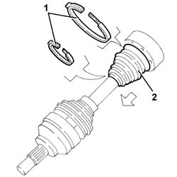
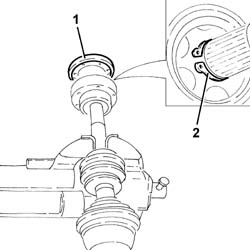
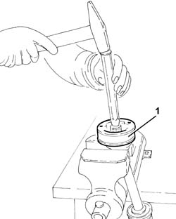
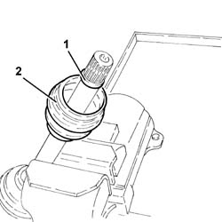
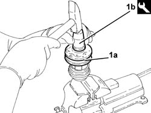

2710A24 differential end constant velocity joint (one) l/h or r/h - r + r with drive shaft removed - includes boot replacement
- Path
- Procedures > 27 AXLE > 2710 FRONT AXLE > 2710A drive shafts and joints > 2710A24 differential end constant velocity joint (one) l/h or r/h - r + r with drive shaft removed - includes boot replacement
- Kind
- repair procedure (removal / refitting; the operation number is the code)
- Applies to
- all engines; all production periods
- Interactive page
- https://sloeber94.github.io/elrnDB-a147/en/#/3025183
Applies to: all engines; all production periods
 Removing
Removing
 Refitting
RefittingPlace the drive shaft in a vice fitted with protective jaws.
1. Remove the boot retaining bands.
2. Push the boot back.

Applies to: all engines; all production periods
1. Remove the cover of the constant velocity joint, differential side, using a suitable punch.
2. Remove the circlip locking the constant velocity joint, differential side.

Applies to: all engines; all production periods
1. Remove the constant velocity joint, differential side, from the shaft using a suitable drift.

Applies to: all engines; all production periods
1. Remove the remaining circlip.
2. Remove the boot.

Applies to: all engines; all production periods
Refitting
RemovingClean the residual grease of the components and check their condition.
Refit a new gaiter in its seating.
Refit the inner circlip.
1. Refit the constant velocity joint (1a), differential side, in its seating with the tool (1b).
 | Name | Country |
|---|---|---|
1b | Fitting tool | 1.860.770.000 |

Applies to: all engines; all production periods
Refit the the circlip locking the constant velocity joint, differential side.
Refit the cover of the constant velocity joint, differential side, in its seating.
Applies to: engines: 1.6 TS, 2.0 TS, 3.2 V6; all production periods
Refit the gaiter back in its seating, then fill it with the recommended grease.
 | Type | Component | Name | Qty. |
|---|---|---|---|---|
- | Grease (g) | DIFF END CONSTANT VELOCITY JOINT | Tutela MRM2 | 80 |
Applies to: engines: 1.9 JTD 8V, 1.9 JTD 16V; all production periods
Refit the gaiter back in its seating, then fill it with the recommended grease.
| Type | Component | Name | Qty. |
|---|---|---|---|---|
- | Grease | DIFF END CONSTANT VELOCITY JOINT | TUTELA MRM ZERO | 140 +/- 10 |
Applies to: engines: 1.9 JTD 8V, 1.9 JTD 16V; all production periods
Secure the gaiter with the retaining bands.
Remove the driveshaft from the vice.